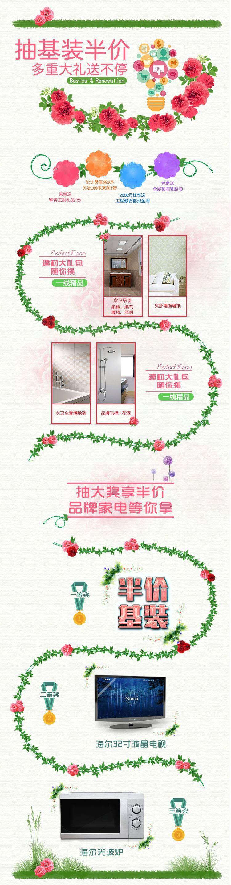
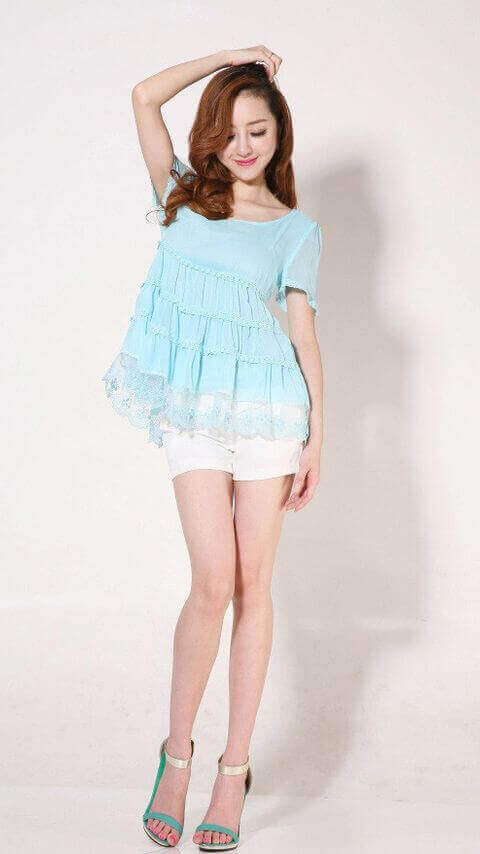
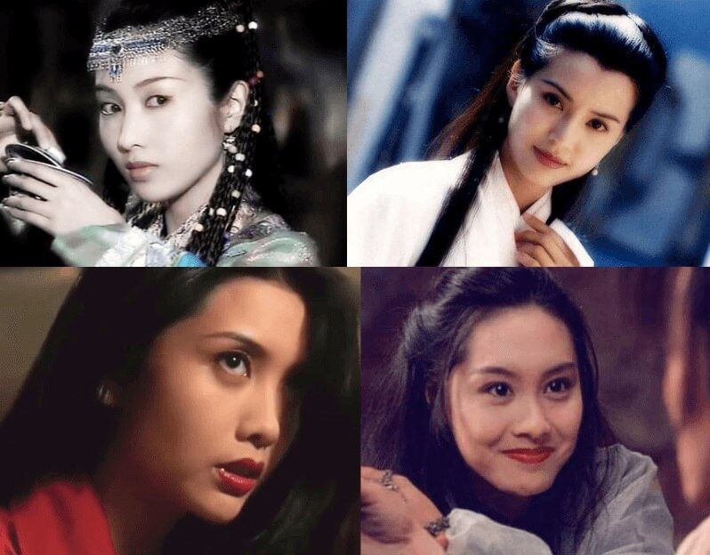
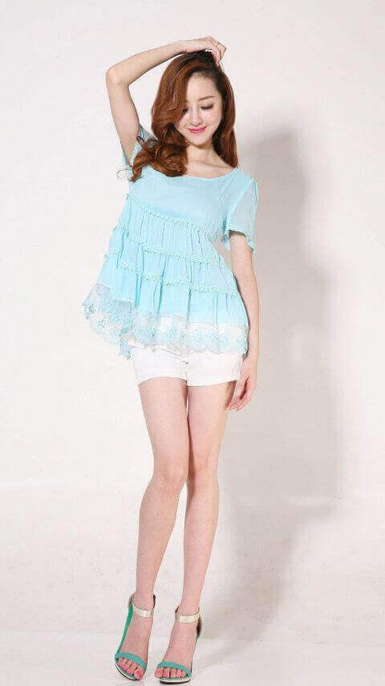
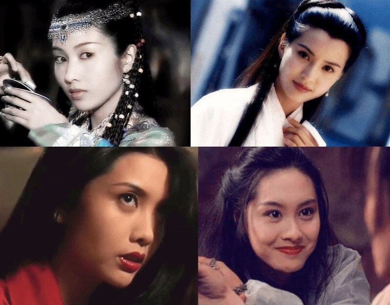

一、JS的内置对象
第一个P标签
第2个P标签哈哈
第3个P标签呵呵呵
第四个P标签呼呼呼呼
二、js的window对象测试
计时器
_
三、window之history对象
跳转到tanJSOne.html页面
四、window之location对象
五、window之screen对象: 注意屏幕高度和浏览器高度的区别，还有文档页面的高度的区别
六、限制文本框输入为数字，且最多输入2位小数
七、js操作transform样式
测试DIV
八、Tab选项卡
百度一下，你就知道
淘淘淘，掏出好心情，淘出好风口；
谜一样的你，值得拥有世界
谜一样的你，值得拥有世界
东哥一响，黄金万两
皇帝轮流做，今年到我家
皇帝轮流做，今年到我家
天猫传奇，不是儿戏；走南闯北，和气生财；
天下在我手，说走咱就走；苏联易购，让逛街不在陋
家国天下，乐在其中，福星高照
您的家乐福，为你养颜排毒
您的家乐福，让你感觉特别酷
您的家乐福，为你养颜排毒
您的家乐福，让你感觉特别酷
小米小米，一心为你
苦心孤诣，坚持到底
全面出击，书写历史痕迹
苦心孤诣，坚持到底
全面出击，书写历史痕迹
九、时钟器setInterval
十、防止定时器累加

十一、仿淘宝轮播
- 紫霞
- 青春
- 足球宝贝
- 王祖贤
- 邱淑贞
- 小马哥
- 甄子丹
- 李连杰

- 成龙
- 关之琳
- 范冰冰
- 张曼玉
- 冰冰范
- 十三姨
- 刘德华
- 至尊宝
十二、监听鼠标坐标变化
- 标签样式设置：
子级标签width=560px, height=300px, border=10px, padding=20px;
父级标签width=2000px, height=360px, border=2px, padding=10px;
2000 = (560+20*2+10*2)*3 + 140 = 1860 + 140 - 鼠标事件属性
- offsetX和offsetY: 鼠标距标签左边和顶部的距离，即鼠标在当前标签中的xy坐标（不包含边框，即以填充区域的左上角为原坐标）
- x和y: 鼠标在浏览器可视区域距离左边和顶部的间距
- clientX和clientY： 意义和x和y一样，表示浏览器可视区域距离左边和顶部的间距
- pageX和pageY: 浏览器页面中距离左边和顶部的间距，包括滚动条区域，即包含隐藏在滚动条前面的左边和顶部的空间
- screenX和screenY: 鼠标在屏幕中距离左边和顶部的间距
- 当前标签属性
-
offsetLeft和offsetTop: 标签在浏览器中距离最近offsetParent标签(定位父级，即position不等于static)的左边和顶部的间距
1、元素自身有fixed定位，offsetParent的结果为null；
2、元素自身无fixed定位，且父级元素都未经过定位，offsetParent的结果为body标签
3、元素自身无fixed定位，且父级元素存在经过定位的元素，offsetParent的结果为离自身元素最近的经过定位的父级元素
4、body元素的offsetParent是null - offsetWidth和offsetHeight: 标签content+padding+border的宽度和高度（即内容+填充+边框）
- clientLeft和clientTop: 标签的左边边框和顶部边框的尺寸
- clientWidth和clientHeight: 标签content+padding的宽度和高度（即内容+填充）
- scrollLeft和scrollTop: 标签往左边或顶部滚动的距离（当有滚动条，且向左或向上有滚动距离时才有值）
- scrollWidth和scrollHeight: 表示当前元素的总宽度和总高度，
包括溢出容器、当前不可见的部分，padding；不包括boder、margin以及水平滚动条和垂直滚动条的高度
-
offsetLeft和offsetTop: 标签在浏览器中距离最近offsetParent标签(定位父级，即position不等于static)的左边和顶部的间距
1
2
X
十三、放大镜效果：对于长宽不等的图片展示会有波动不准确，因为磨片覆盖在当前图片上，造成鼠标移动事件被阻挡
 



十四、放大镜效果二，当前图片设置为背景图片（如果磨片宽高小，效果更好，不遮挡鼠标移动事件）
十五、放大镜效果，针对正方形图片
十六、进度条和滚动条效果展示
0%


overflow=scroll样式滚动展示效果
十九、选中文字分享到新浪微博
朝为田舍郎，暮登天子堂；
将相本无种，男儿当自强。
男儿立志出乡关，学不成名誓不还；
埋骨何须桑梓地，人生无处不青山。
葡萄美酒夜光杯，欲饮琵琶马上催；
醉卧沙场君莫笑，古来征战几人回。
将相本无种，男儿当自强。
男儿立志出乡关，学不成名誓不还；
埋骨何须桑梓地，人生无处不青山。
葡萄美酒夜光杯，欲饮琵琶马上催；
醉卧沙场君莫笑，古来征战几人回。
二十、移动动画
二十一、无限轮播效果
二十二、获取CSS属性: js标签对象通过style只能获取行内样式的值；而currentStyle和getComputedStyle可以获取行内行外样式的值
点我获取信息
23、在20移动动画和22获取标签属性的基础上，对功能函数进行封装
24、联动效果
X
26、网易轮播图
<
>
27、旋转木马
<
>
28、闭包应用：左右移动
<<<>>>
- 29、测试var和let的块级作用域区分
- var不足之处：1、可以重复声明；2、不能限制修改；3、不支持块级作用域；
- let --> 不能重复声明、可以修改、支持块级作用域
- const --> 不能重复声明、不能修改、支持块级作用域
- 测试var：
- 测试let：